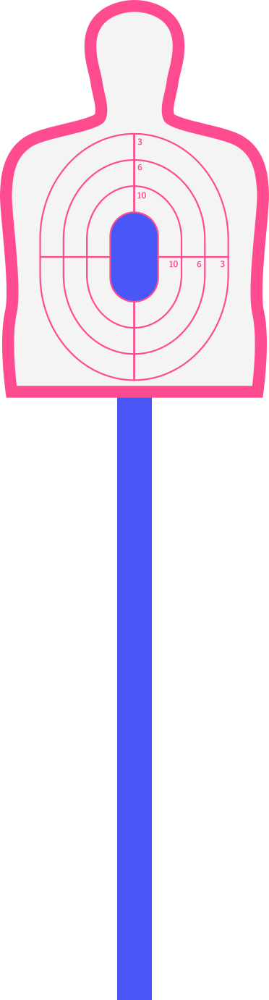
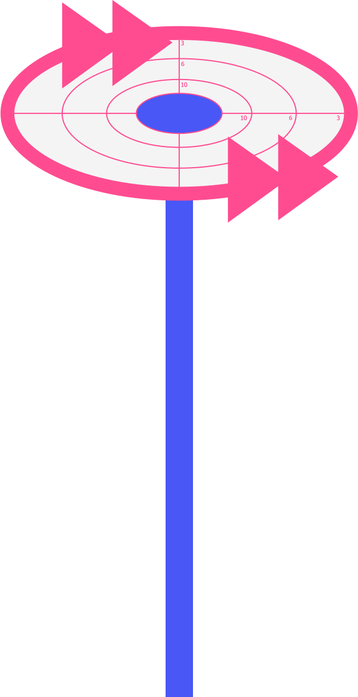
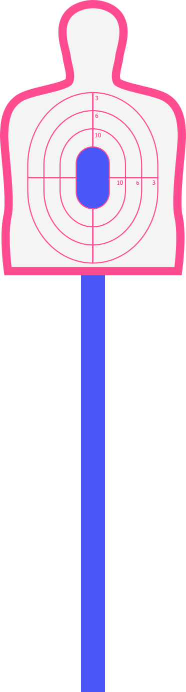
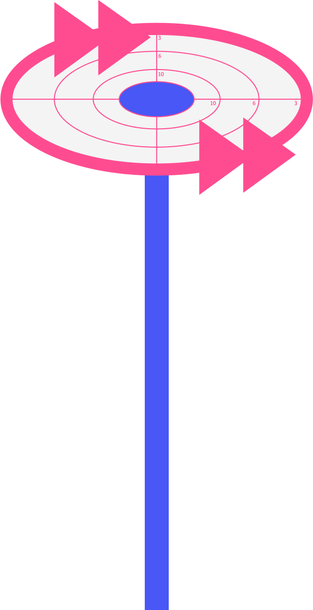

논리적 오류,
상대방의 허점을 조준하는 법
“지금 제일 높은 산꼭대기는 안 추울까?”
“햇볕을 제일 바로 옆에서 때려 박는데 그 곳이 제일 덥지 않을까.
추워 죽겠는데 왜 비행기에서 에어컨을 틀어주겠어?
미치도록 더우니까 틀어주는거지”
“.......😡”
from. 신서유기
이야기를 할 때 상대방의 말이 뭔가 이상하다는 걸 느꼈는데,
뭐가 이상한지 정확히 몰라 반박 못한 경험이 있나요?
그것은 바로 논리적 오류를 간파하지 못했기 때문입니다!
논리적 오류: 논리학 용어로, 논증을 구성하거나 추론을 진행하는 데 있어
타당하지 않은 방식을 사용하는 것
 


